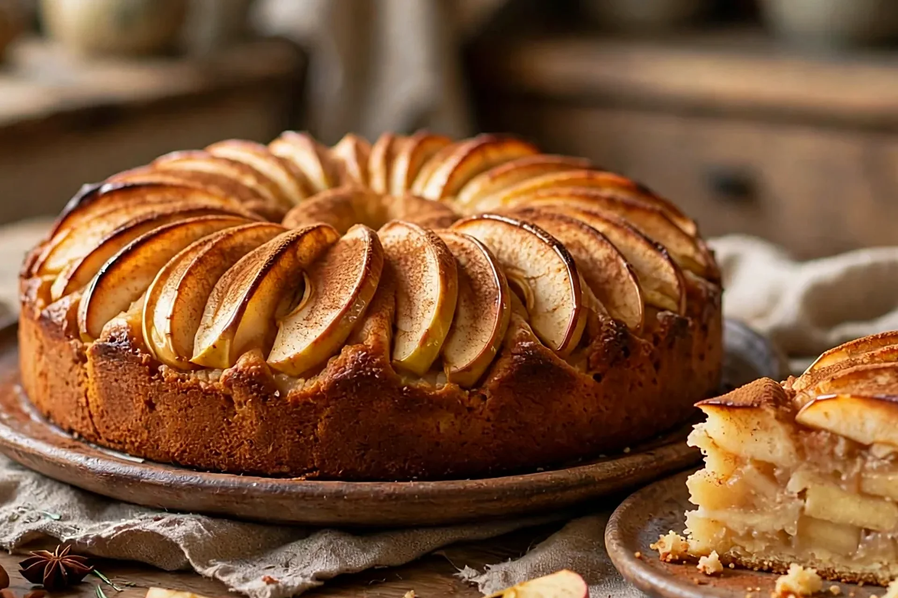

Versunkener Apfelkuchen – saftig und einfach wie von Oma
Dieser versunkene Apfelkuchen ist der Kuchen meiner Kindheit: saftiger Rührteig, obendrauf Apfelspalten, die beim Backen einsinken und ganz weich werden. Er ist schnell gerührt, braucht keine besondere Form und schmeckt pur, mit Puderzucker oder noch warm mit Vanillesoße.

Inhaltsverzeichnis
Zutaten
Zubereitung
- Den Backofen auf 180 °C Ober-/Unterhitze vorheizen. Eine Springform (26 cm) fetten und mit Mehl ausstäuben oder den Boden mit Backpapier belegen.
- Die Äpfel schälen, vierteln und das Kerngehäuse entfernen. Die Viertel auf der runden Seite mehrmals längs einschneiden, aber nicht durchschneiden, und mit Zitronensaft beträufeln.
- Butter, Zucker, Vanillezucker und Salz hell und cremig schlagen. Die Eier einzeln jeweils ca. 30 Sekunden unterrühren.
- Mehl und Backpulver mischen und abwechselnd mit der Milch kurz unterrühren, bis ein glatter, streichfähiger Teig entsteht.
- Den Teig in die Form füllen und glatt streichen. Die Apfelviertel mit der eingeschnittenen Seite nach oben dicht an dicht in den Teig drücken.
- Nach Belieben mit Zimt bestreuen und im vorgeheizten Ofen 40–45 Minuten backen, bis der Kuchen goldgelb ist und die Stäbchenprobe sauber herauskommt.
- Den Kuchen 10 Minuten in der Form ruhen lassen, dann herauslösen und auf einem Gitter abkühlen lassen. Vor dem Servieren mit Puderzucker bestäuben.

Tipp
Säuerliche Äpfel wie Boskoop geben den besten Kontrast zum süßen Teig. Wer mag, streut eine Handvoll gehobelte Mandeln oder Rosinen mit in den Teig.
📌 Mehr Rezept-Ideen findest du auf unserem Pinterest-Profil:
Lecker Rezepte auf Pinterest
Lecker Rezepte auf Pinterest